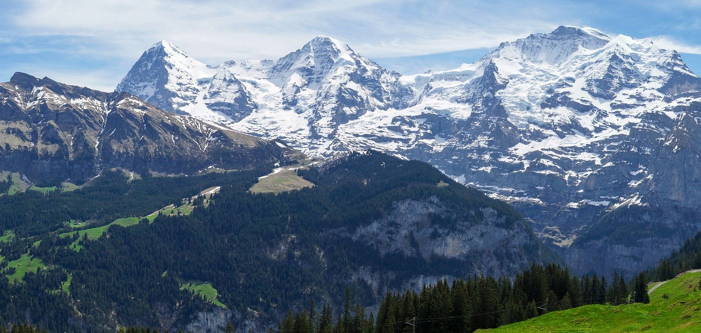
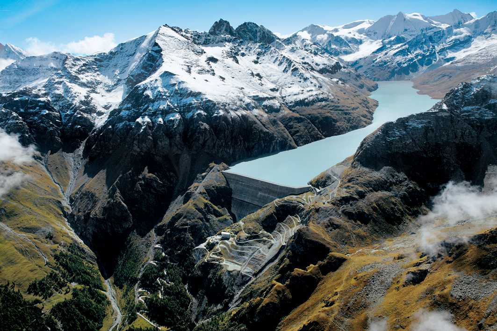

Горы Швейцарии


Швейцарские Альпы поразили своей величественной красотой. Интерлакен стал отправной точкой для исследования горных вершин и кристально чистых озер.
Подъем на Юнгфрау открыл захватывающие виды на заснеженные пики. Чистейший горный воздух и тишина создавали ощущение полного единения с природой.
Прогулки вдоль бирюзовых озер, традиционные швейцарские деревушки и гостеприимство местных жителей сделали это путешествие незабываемым.
Рекомендации для посещения
- Юнгфрауйох - "Вершина Европы" с панорамными видами на Альпы. Бронируйте билеты заранее!
- Озеро Бриенц - прокатитесь на лодке по бирюзовой воде, окруженной горами.
- Лаутербруннен - долина 72 водопадов, идеальна для пеших прогулок.
- Гриндельвальд - уютная деревушка с потрясающими видами на Эйгер.
- Хардер Кульм - смотровая площадка над Интерлакеном, доступна на фуникулере.